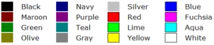

| Identifier | Color= | |
| Format 1 | [Black, Maroon, Green,... ] + Alpha as floating point number in range 0...1.0 | |
| Format 2 | [red, green, blue, alpha] (Four floating-point numbers in range 0...1.0) | |
| Purpose | Color of an element | |
| Used in | Subdomain_Properties, Elements, Baffle, Diaphragm, Shell, VibFile | |
Color= specifies the color of an element. There are two ways of specification.
By giving a name allows for a simple and quick way of defining the color. Assign one of the following names:

For example
Elements "Interface"
Subdomain=1,2
Color=Blue 0.5
...
For transparency add a number which ranges from 0 to 1.0. A value of one means the shape is drawn opaque, a value of 0.5 means half-transparent.
In this case the color is specified as a triplet of red, green and blue values (RGB). Each value ranges from 0 to 1, which corresponds to zero to 100% saturation. For example, "blue" is rendered with
Color = 0.0, 0.0, 1.0
Also, here, you can add the alpha-channel as a fourth value.
Color = 0.0, 0.0, 1.0, 0.5
If you define Color= at Driving or at WallImpedance the color is assigned to referenced elements.
The Diaphragm and VibFile sections create vibrating and non-vibrating elements (for example the baffle).
In this case Color= is assigned to the non-vibrating part and DrvColor= to the vibrating part.